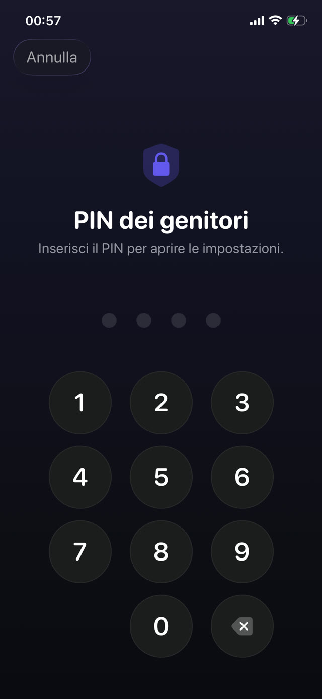

Ecco prima la configurazione, poi le porte, poi come chiuderle.


Il modo integrato: Tempo di utilizzo di Apple
Sull'iPhone del bambino, o dal tuo dispositivo se il telefono è nel tuo gruppo In Famiglia:
- Apri Impostazioni e tocca Tempo di utilizzo.
- Tocca Restrizioni di contenuto e privacy e attivale.
- Usa Limiti app per limitare categorie o singole app, e Tempo di inattività per le ore in cui può girare solo ciò che permetti tu.
- Imposta un codice di Tempo di utilizzo diverso da quello di sblocco del telefono, e non usare una data di nascita.
- In Restrizioni di contenuto e privacy, blocca le modifiche al codice e alle impostazioni dell'account.
Le scorciatoie che i bambini trovano davvero
Nessuna di queste richiede abilità tecniche. Tutte girano nel cortile della scuola:
- Disinstallare e reinstallare. Un limite legato a un'app specifica si aggira rimuovendola e riscaricandola, se non limiti anche l'installazione di app.
- Il browser. Bloccare l'app di TikTok o YouTube non serve a niente se Safari può aprire lo stesso sito. Blocca la categoria o limita anche i contenuti web.
- Cambiare l'orologio. Spostare data e ora del dispositivo può confondere i limiti, se non blocchi le impostazioni di data e ora.
- Guardarti digitare. Il codice si impara sbirciando alle spalle molto più spesso che indovinandolo.
- "Chiedi altro tempo". Se le approvazioni sono a un tocco di distanza sul tuo telefono, le concederai mentre sei distratto, e il limite è finito.
Il problema più profondo dei limiti di tempo
Anche una configurazione perfettamente sigillata ha un difetto di progetto: quando il tempo finisce, non è cambiato niente se non che ora tuo figlio è annoiato e arrabbiato con te. Bloccare crea un vuoto. A riempirlo è o una trattativa o un aggiramento.
Per questo la configurazione più duratura non si limita a bloccare, ma mette qualcosa dall'altra parte del blocco. Le app non sono sparite; stanno dietro a un compito che vale la pena fare.
Bloccare con uno scopo
Guardian Reader usa sotto lo stesso sistema di Tempo di utilizzo di Apple, quindi il blocco è applicato a livello di sistema operativo, non da un'estensione del browser o da un profilo cancellabile con leggerezza. La differenza è cosa lo sblocca.
Invece di aspettare che scada un timer, tuo figlio scansiona le pagine di un libro di carta e le legge ad alta voce di seguito. L'app verifica la lettura sul testo scansionato e rilascia i minuti che hai impostato. Quando finiscono, le app si bloccano di nuovo da sole.
La configurazione
- Installa Guardian Reader sull'iPhone del bambino e aprilo.
- Concedi l'accesso a Tempo di utilizzo quando lo chiede; è il permesso di Apple.
- Scegli le app o le categorie da bloccare: giochi, YouTube, TikTok, social, o tutte insieme.
- Imposta le pagine per sessione e i minuti guadagnati.
- Crea un PIN dei genitori. È separato dal codice del telefono e da Face ID, perché il volto registrato su quell'iPhone è di tuo figlio.
Perché il PIN non è Face ID
Questo dettaglio conta più di quanto sembri. Sul telefono di un bambino la biometria è del bambino, quindi qualsiasi "blocco genitori" che si apre con Face ID si apre anche per lui. Guardian Reader usa deliberatamente solo un PIN che conosci tu, con un blocco dopo ripetuti tentativi errati.
La lettura sblocca lo schermo.
Gratis · Nessun account, nessun tracciamento
Scarica Guardian Reader per iPhone